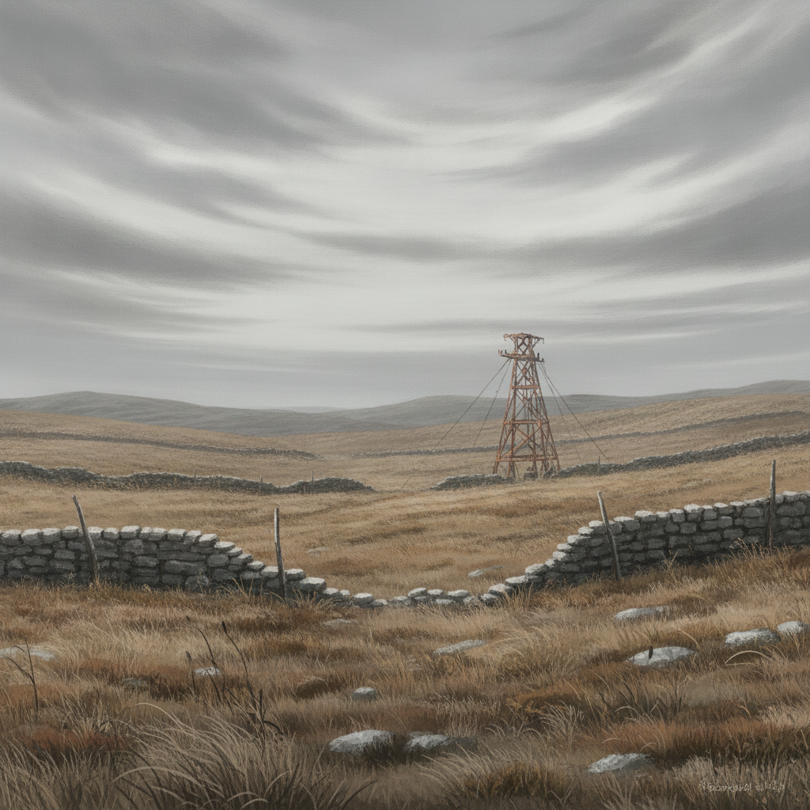

We land in a nowhere-country of wind-scoured heath and broken drystone walls. The College's panic-teleport has flung us into a blank margin between nations. Hostile security services are already on our trail.
Each of them turns what they know to keeping us alive — Ember's raw power a shield and a beacon at once, Isolde reading Assayer methods and Vorn's devotional networks, Seraphine's court fluency opening doors it should not, and Wren working the smuggler underground for bolt-holes and forged tokens.
Between narrow escapes, we piece together fragments of information. The world's collapse is no accident. It's a coordinated design.